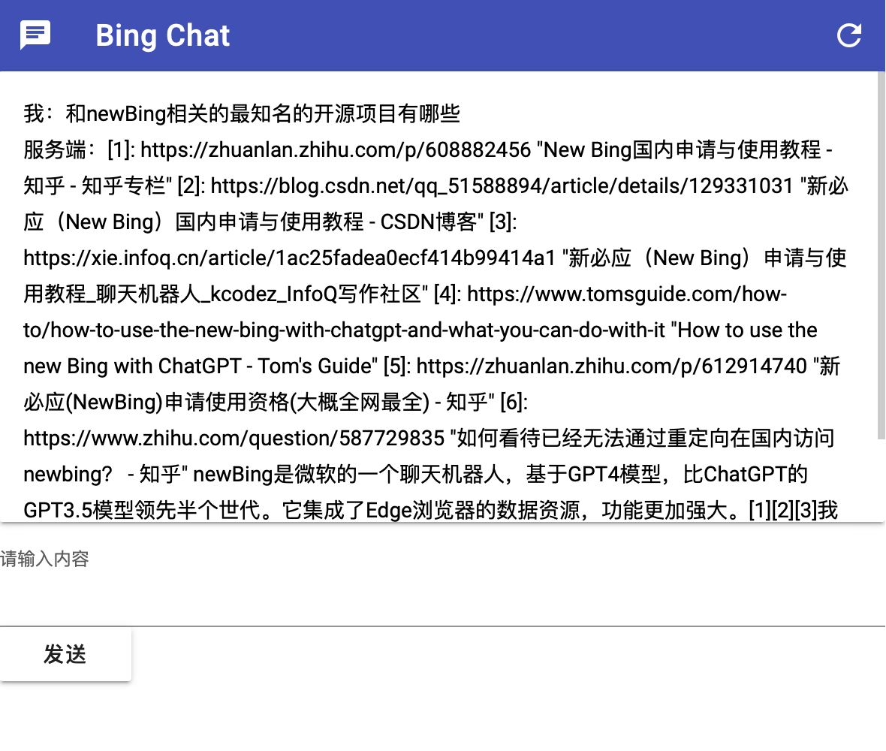
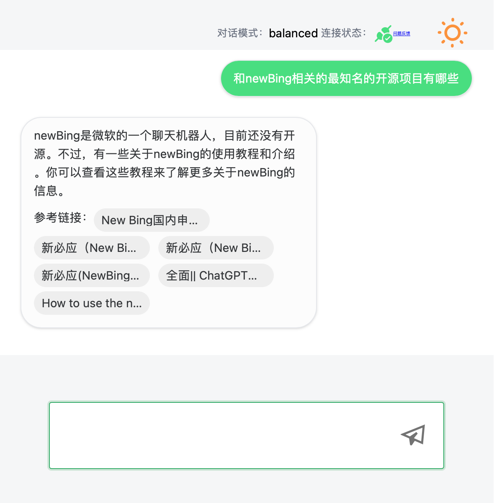
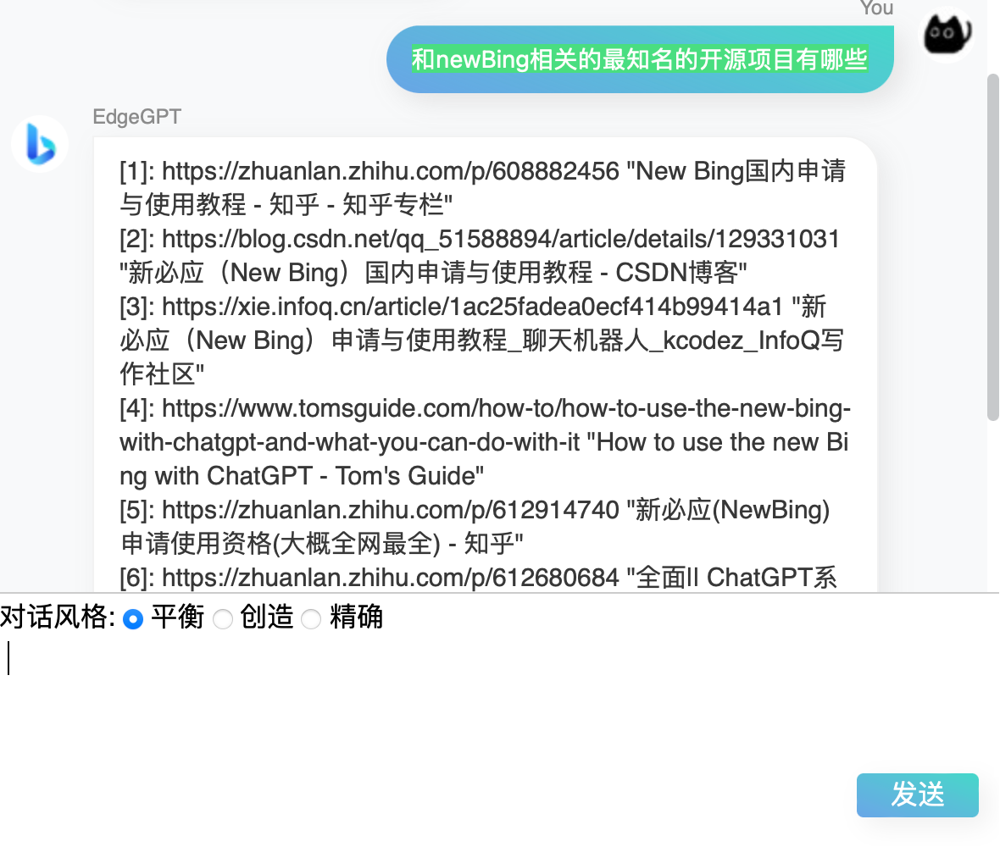

准备
- 已通过候补名单的New Bing账户
- 语言: Python3.8+.
- 包: fastapi, uvicorn, asyncio, python-multipart, EdgeGPT.
- 软件: docker, docker-compose（如果你想部署到VPS供公网访问）
配置服务端
- 浏览器安装Cookie-Editor扩展.
- 在https://www.bing.com/chat页面中点击扩展.
- 点击扩展右下角的Export,将复制的内容粘贴到cookie.json.
本机访问
-
运行bing_chat.py.(可选： 配置地址和端口，在bing_chat.py第15-16行)
-
clone Bing-Chat 到本地
git clone https://github.com/huwei901108/Bing-Chat.git -
clone Bing-Chat 到本地
pip install -r requirements.txt -
运行bing_chat.py
python bing_chat.py
-
局域网(公网)访问，推荐使用docker-compose
-
打开.env文件，默认值为srv_port=5000（服务端端口） cli_port=80（客户端端口），按需修改，避免和现有端口冲突
-
在代码根目录执行
docker-compose up -d -
从局域网其他设备访问客户端，即 host_ip:cli_port
界面展示
-
web.html

-
web2.html

-
web3/html/index.html
